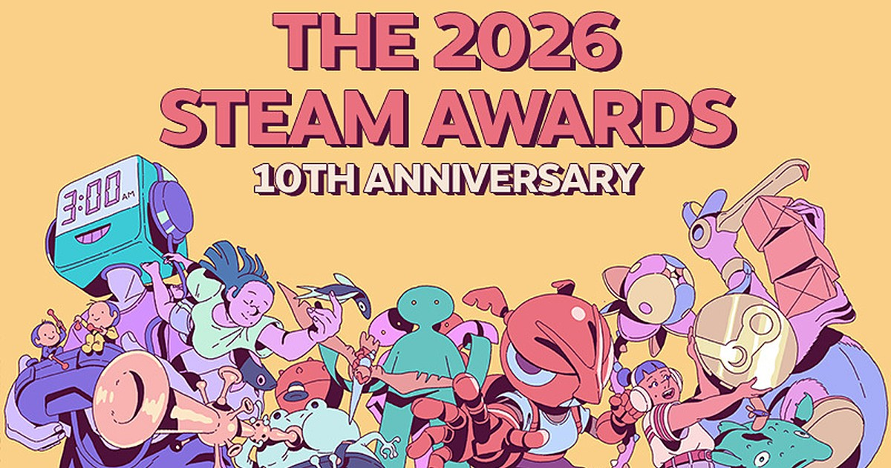

Steam Awards nominations are open — and the year's biggest game can't even enter
Valve opened nominations for the 2026 Steam Awards on Monday, with a new Hall of Fame race pitting a decade of past Game of the Year winners against each other — and Grand Theft Auto VI isn't eligible, because it's not on Steam.

Disclosure: this post contains affiliate links. I earn a commission on qualifying purchases.
Valve opened nominations for the 2026 Steam Awards on Monday, and this one is a milestone: the tenth edition of the fan-voted awards, with fourteen categories on the ballot and nominations closing Monday, November 30, at 10 a.m. Pacific. Any Steam account that isn't limited can nominate, and the window is the only stage where you can name any eligible game — after the deadline, each category is narrowed to five finalists and you only get to pick among those.
The headliner is a brand-new category built for the anniversary. The Hall of Fame Award takes the past winners of Steam's Game of the Year and makes them fight each other for the title of best game of the past decade. The ten in the race:
• Grand Theft Auto V
• The Witcher 3: Wild Hunt
• PUBG
• Sekiro: Shadows Die Twice
• Red Dead Redemption 2
• Resident Evil Village
• Elden Ring
• Baldur's Gate 3
• Black Myth: Wukong
• Hollow Knight: Silksong
Two of those are stand-ins rather than outright winners: there was no Game of the Year award in the first two years, so Valve is using the winners of the 2016 "Whoooaaaaaaaa, Dude" and 2017 "Choices Matter" categories — GTA V and The Witcher 3 — in their place. Silksong, last year's Game of the Year, rounds out the field as the most recent winner.
The GTA 6-shaped hole in the ballot
There is one game Steam Awards voters will not get to weigh in on, and it is the biggest story in gaming right now: Grand Theft Auto VI is not on Steam, so it cannot be nominated in any category. The game that sold tens of millions of copies in its opening weekend and owns the conversation this week simply does not exist on Valve's store, and the Steam Awards only recognize games released there.
That leaves the Game of the Year race to the year's PC releases. The eligibility window covers games released on Steam after last year's Autumn Sale, which ended October 6, 2025. The Labor of Love Award works the other way around — it honors older games still getting new content, and past winners of that award are barred from winning it again.
Three old favorites are back
Valve also brought back three throwback categories inspired by past editions: Just Five More Minutes, for the games that keep you playing until 3 a.m.; Defies Description, for the genre mash-ups nobody has a name for yet; and This Is My Job Now, for games that turn dull real-life work into fun. The Most Innovative Gameplay Award is gone, and the Best Game on Steam Deck Award has been renamed to cover handhelds in general.
The full category list: Hall of Fame, Game of the Year, VR Game of the Year, Labor of Love, Best Handheld Game, Just Five More Minutes, Defies Description, This Is My Job Now, Better With Friends, Outstanding Visual Style, Best Game You Suck At, Best Soundtrack, Outstanding Story-Rich Game, and Sit Back and Relax.
How the calendar runs
Nominating earns you the 2026 Steam Awards Nomination Committee badge, which levels up through four tasks to a maximum of 100 XP on your Steam profile. The finalists in each category are revealed when voting opens alongside the Steam Winter Sale on December 17. Voting runs until January 2, 2027, at 10 a.m. Pacific, and Valve announces the winners the moment it closes.
Awards season is already in full swing around it. The Golden Joystick Awards have already weighed in — Resident Evil Requiem took Ultimate Game of the Year there — and The Game Awards follow on December 10. But the Steam Awards are the only ones where the players themselves pick the nominees, and this year's ballot has a decade of history riding on one extra vote.
Sources: Nominations are open for the 2026 Steam Awards! (Steam) · Steam Officially Launches Its 2026 Game of the Year Awards Voting (Polygon) · Valve opens Steam Awards nominations for "extra special" 10th anniversary with new categories (PC Guide) · Steam Awards 2026 Nominations Open With a Hall of Fame Vote for the Best Game of the Decade (gHacks)
Gear up: Razer — mice, keyboards, headsets and laptops.